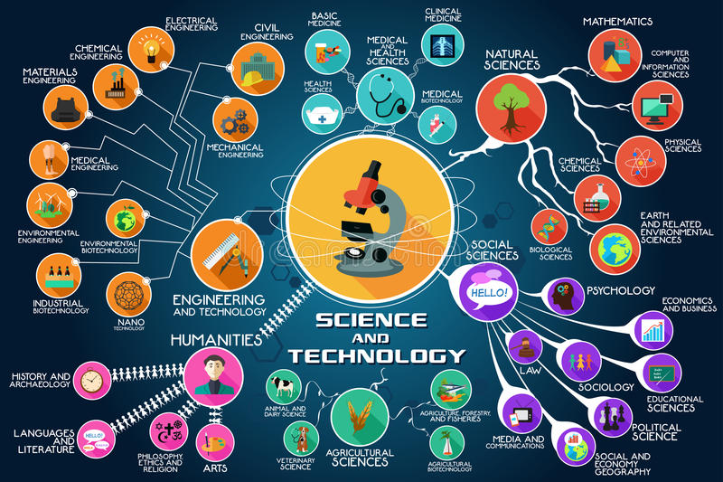

Science and Technology have always been an integral part of Indian culture. Natural philosophy, as it was termed in those ancient times, was pursued vigorously at institutions of higher learning. The Indian Renaissance, which coincided with our independence struggle, at the dawn of 1900s witnessed great strides made by Indian scientists. This innate ability to perform creatively in science came to be backed with an institutional setup and strong state support after the country’s independence in 1947. Since then, the Government of India has spared no effort to establish a modern S&T infrastructure in the country. The Department of Science and Technology plays a pivotal role in promotion of science and technology in the country.
This section offers detailed information pertaining to scientific education and scientific research & development. Details of policies, schemes, documents and programmes for scientists, researchers, scholars, students, etc. are also available.
Important Links